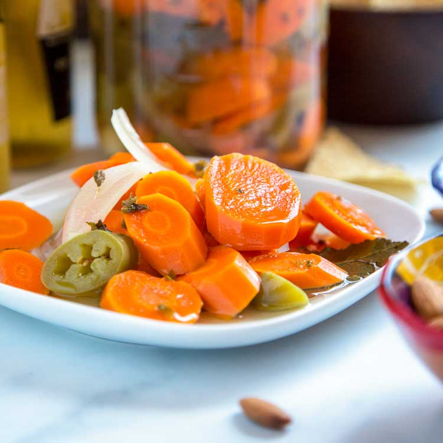

Picled Carrots

Description
Are you tired of eat unhealthy snacks like chips or cookies? Want to make your own munchies
that is easy to make and only get better with age? Pickled carrots are for you!
Ingredients
- Carrots
- White Vinegar
- Sliced Onions
- Garlic
- Bay Leaf
- Salt
- Pepper Corn
- Mason Jars
Steps
- Chop ends off the carrots and discard.
- Slice the carrots into quarters, about 1/8 of inch thick.
- Peal 5-8 garlic cloves.
- Cut the onion in half and save one half for street tacos.
- Slice the onions length wise so they're skinny and long.
- Pour approximately 1 cup of white vinegar into a medium size pot.
- Place pot on to a stove at medium/high heat.
- Once the vinegar starts to steam lightly, add approximately 2 tablespoons of salt and pour 2 tablespoons of pepper corn into the pot.
- Stir the mixture until the salt is dissolved.
- Place the carrots, onions, garlic, and 2 bay leafs into the mixture.
- Cook for approximately 5 minutes on medium/high. Stir occasionally
- After 5 minutes, bring the heat down to a simmer and leave uncovered for 45 minutes. Stir every 5-10 minutes.
- Using tongs, place all vegetables into a mason jar. Once the mason jar is approximately 3/4 full, pour the vinegar mixture into the jar leaving a little space at the top.
- Leave un capped for an hour to cool.
- You can eat the pickled carrots now or you can place the mason jar in the fridge to let the taste get stronger.
- Enjoy your healthy snack!